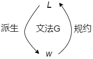
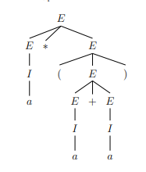
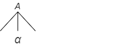
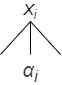
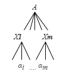
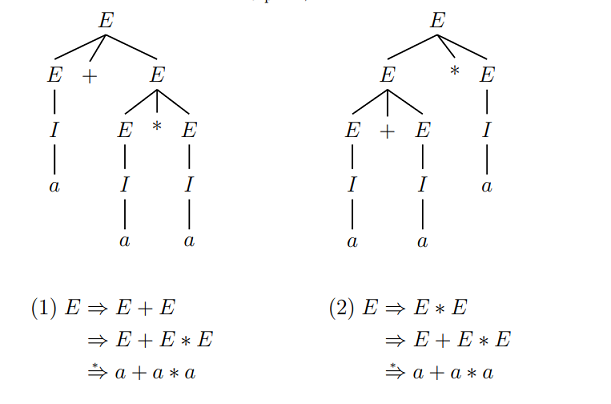
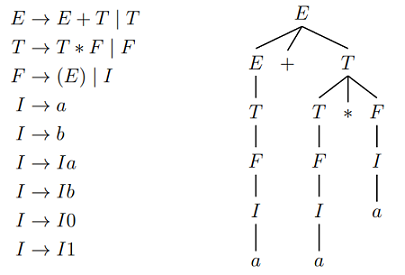

上下文无关文法
自然语言文法
一个英语语法的例子：
根据语法结构，可以从$ \langle sentense \rangle$推出一个句子：
很显然，这个句子是符合$\langle sentense \rangle$的句子结构的。从$ \langle sentense \rangle$到句子这一过程，使用的过程就是文法。
形式定义
接下来，由一个回文字符串的定义引出上下文无关文法的形式定义。
定义：如果字符串$w \in \Sigma^{\ast}$满足$w = w^R$，则称字符串$w$为回文（palindrome）。如果语言$L$中的字符串都是回文，则称$L$为回文语言。
例：$\Sigma = \lbrace 0,1 \rbrace$上的回文语言：
易证明$L_{pal}$是非正则的。可以用递归的形式来定义这种语言：
- $\epsilon,0,1$都是回文
- 如果$w$是回文，$0w0$,$1w1$也是回文
使用嵌套定义表示这种递归结构：
文法可以定义，表示，产生目标字符串。
定义：上下文无关文法（CFG，Context-Free Grammer），简称文法，$G$是一个四元组
- $V$：变元的有穷集，变元也成为非终结符或者语法范畴
- $T$：终结符的有穷集，且$V \cap T = \emptyset$
- $P$：产生式的有穷集，每个产生式包括
- 一个变元，称为产生式的头或左部
- 一个产生式符号$\to$，读作“定义为”
- 一个$(V \cup T)^{\ast}$中的符号串，称为体，或者右部
$S \in V$：初始符号，文法开始的地方
产生式$A \to \alpha$，读作$A$定义为$\alpha$
- 如果有多个$A$的产生式：可简写为：$A \to \alpha_1 \vert \alpha_2 \vert \dots \vert \alpha_n$
- 文法中变元$A$的全体产生式，称为$A$产生式
例：回文语言$L_{pal} = \lbrace w \in \lbrace 0,1\rbrace^{\ast} \vert w = w^R \rbrace$的文法可设计为：
字符使用的一般约定：
- 终结符：$0,1,\dots,a,b, \dots \rbrace$
- 终结符串：$\dots, w,x,y,z \dots$
- 非终结符：$S,A,B, \dots$
- 终结符或非终结符：$\dots,X,Y,Z$
- 终结符或非终结符组成的串：$\alpha,\beta,\gamma,\dots$
例：简化版的算术表达式：
- 运算只有加和乘(+/*)，参数仅为标识符
- 标识符：以$\lbrace a,b \rbrace$开头由$\lbrace a,b,0,1 \rbrace$组成的字符串，这样的表达式集合可用文法$G_{exp}$表示其中产生式$P$有10条产生式：
规约和派生
非形式定义：从字符串到文法变元的分析过程，称为递推推理或规约。从文法变元到字符串的分析过程，称为推导或派生。

- 规约：自底向上，由产生式的体向头的分析
- 派生：自顶向下，由产生式的头向体的分析
例：用算术表达式文法$G_{exp}$，将$a \ast (a+b00)$规约的过程
给产生式标号：
定义：若CFG $G = (V,T,P,S)$，设$\alpha,\beta,\gamma \in (V \cup T)^{\ast}$，$A \in V$，$A \to \gamma \in P$，那么称在$G$中由$\alpha A \beta$可派生出$\alpha \gamma \beta$，记为
相应的，称$\alpha \gamma \beta$可规约为$\alpha A \beta$.
- $\alpha A \beta \underset{G}{\Rightarrow} \alpha \gamma \beta$，即$A \to \gamma$的右部$\gamma$替换串$\alpha A \beta$中变元$A$得到串$\alpha \gamma \beta$
如果语境中$G$是已知的，可省略，记为$\alpha A \beta \Rightarrow \alpha \gamma \beta$
设$a_1,\dots,a_m \in (V \cup T)^{\ast}, m \geq 1$，对$i = 1,\dots,m-1$如果有$a_i \underset{G}{\Rightarrow} a_{i+1}$成立，即$a_1$经过0步或者多步派生可得到$a_m$，
，那么记为$a_1 \underset{G}{\Rightarrow} a_m$
若$\alpha$派生出$\beta$刚好经过了$i$步，可记为$\alpha \underset{G}{\stackrel{i}{\Longrightarrow}} \beta$
例：算术表达式$a \ast (b+ b00)$在文法$G_{exp}$中派生过程：
最左派生和最右派生
定义：为了限制派生的随意性，要求只替换符号串中最左边变元的派生过程，称为最左派生，记为
只替换最右的，称为最右派生，记为
- 任何派生都有等价的最左派生和最右派生
续例：
表达式$a \ast (b+ a)$在$G_{exp}$中的最左派生和最右派生分别是？
产生式集合
最左派生：
最右派生：
文法的语言
定义：CFG $G=(V,T,P,S)$的语言定义为：
那么符号串$w$在$\boldsymbol{L}(G)$中，要满足：
- $w$仅由终结符组成
- 初始符号$S$能派生出$w$
定义：如果$L$是某个CFG $G$定义的语言，即$L=\boldsymbol{L}(G)$，则称$L$为上下文无关语言（CFL，Context-Free Language）
- 上下文无关是值在文法派生的每一步符号串$\gamma$仅根据$A$的产生式派生，而无需依赖$A$的上下文$\alpha,\beta$
定义：若CFG $G = (V,T,P,S)$，初始符号$S$派生出来的符号串，称为$G$的句型。即：
- 如果$S \underset{lm}{\stackrel{\ast}{\Longrightarrow}} \alpha$，$\alpha$为左句型
- 如果$S \underset{rm}{\stackrel{\ast}{\Longrightarrow}} \alpha$，$\alpha$为右句型
- 只含终结符的句型，也称为$G$的句子。而$\boldsymbol{L}(G)$也就是文法$G$的全部句子，即语言。
例：给出语言$L = \lbrace w \in \lbrace 0,1 \rbrace^{\ast} \vert w \text{包含至少3个1} \rbrace$的文法：
定义产生式：
例：描述CFG $G=(\lbrace S \rbrace,\lbrace a,b \rbrace, \lbrace S \to aSb,S \to ab \rbrace,S)$定义的语言
所以$\boldsymbol{L}(G) = \lbrace a^nb^n \vert n \geq 1 \rbrace$
例：请为语言$L=\lbrace 0^n1^m \vert n \not= m \rbrace$设计文法
处理这种不相等的情况，往往分类讨论：
- $n \gt m$，0多1少，用$C$表示01相等的部分，A表示头部多处的0：
- $n \lt m$，0少1多，用$C$表示01相等的部分，B表示尾部多处的1：
例：设计$L_{eq}=\lbrace 0,1 \rbrace^{\ast} \vert w \text{中0和1个数相等} \rbrace$的文法
设计的产生式，必须每次递推都产生相等的0和1，$S \to 0S1 \vert 1S0 \vert \epsilon$，还要保证所有产生的0和1相等的串都能被递推（0或1同时作为首尾的情况），这里将他们相连即可。最终结果：
另外一种思路，所有出现0和1的串，要么0在前，要么1在前：
语法分析树
前例中$G_{exp}$推导算术表达式$a \ast (a+a)$的过程可以描述成一个树形结构，在分析字符串和文法语言表示的关系中非常有用。

形式定义
定义：
CFG $G = (V,T,P,S)$的语法分析树（语法树或派生树）为：
- 每个内节点标记为$V$中的变元符号
- 每个叶节点标记为$V \cup T \cup \lbrace \epsilon \rbrace$中的符号
- 如果某内节点标记是$A$，其子节点从左至右分别为：那么若由$X_i = \epsilon$，则$\epsilon$是$A$的唯一子节点，且$A \to \epsilon \in P$
定义：语法树的全部叶节点从左至右连接起来，称为该数的产物或结果，如果根节点是初始符号$S$，叶节点是终结符或$\epsilon$，那么改树的产物属于$\boldsymbol{L}(G)$
定义：语法树中标记为$A$的内节点及其全部子孙节点构成的子树，称为$A$子树。
语法树和派生的等价性
定理：CFG $G = (V,T,P,S)$，且$A \in V$，那么文法$G$中
当且仅当$G$中存在以$A$为根节点产物为$\alpha$的语法树。
证明：
【充分性】对$A \underset{}{\stackrel{j}{\Longrightarrow}}\alpha$的步骤数$j$归纳证明：
归纳基础：$j=1$时，$A \Rightarrow \alpha$，有$A \to \alpha \in P$，可构造：

归纳递推：假设$j \leq n$时命题成立，当$j=n+1$时，$A \underset{}{\stackrel{n+1}{\Longrightarrow}} \alpha$的派生过程为：
其中$A \to X_1 \dots X_m \in P$，而$X_i$若非终结符，一定有$X_i \underset{}{\stackrel{\ast}{\Longrightarrow}} \alpha_i$且不超过$n$步，由归纳假设存在：

因此可以构造以$A$为跟，以$X_i$为子树（或叶子）的语法树，其产物刚好为$\alpha$
【必要性】对语法分析树的内节点数$j$归纳证明：
- 归纳基础：$j=1$时，唯一的内节点是根节点
有$A \to \alpha \in P$，那么$A \underset{}{\stackrel{\ast}{\Longrightarrow}} \alpha$ - 归纳递推：假设$j \leq n$时命题成立。当$j=n+1$，跟节点$A$儿子为$X_1,X_2,\dots,X_m$，则 而$X_i$子树（或叶子）内节点数都不超过$n$，由归纳假设由从左至右连接$\alpha_i$刚好为树的产物$\alpha$，所以有
由于每个CFG派生都有最左派生和最右派生，所以每棵语法分析树都有唯一的最左和最右派生。
给定CFG $G = (V,T,P,S),A \in V$，以下命题等价
- 通过递归推理，确定串$w$在变元$A$的语言中
- 存在以$A$为根节点，产物为$w$的语法分析树
- $A \underset{}{\stackrel{\ast}{\Rightarrow}} w$
- $A \underset{lm}{\stackrel{\ast}{\Rightarrow}} w$
- $A \underset{rm}{\stackrel{\ast}{\Rightarrow}} w$
语法和语言的歧义性
定义：如果CFG G使某些符号串中有两棵不同的语法分析树，则称该文法$G$是歧义的
例：算术表达式的文法$G_{exp}$中，对句型$a + a \ast a$有下面两棵语法树

由于实际运算要先乘除，后加减，所以左侧的文法是正确的表示。
有些文法的歧义性，可以通过重新设计文法消除歧义性
续例：文法$G_{exp}$重新设计为$G_{exp^{\prime}}$可消除歧义。

定义：定义同样的语言可以有多个文法，如果CFL L的所有文法都是歧义的，那么称语言$L$是固有歧义的。
- 固有歧义的语言存在，例如： 任何形如$a^nb^nc^n$的串，无论如何设计，都会有两棵语法树。
- 判定“任何给定CFG G是否有歧义”是一个不可判定问题